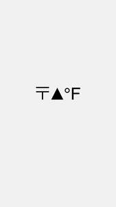

Trade Mark Journal No.2025/048 28 November 2025
UK00004295547 16 November 2025 (9,16,25,35,41,44)

- Class 9
- Downloadable digital content; downloadable music; downloadable audio recordings; downloadable sound recordings; downloadable DJ mixes; downloadable spoken-word recordings; downloadable video recordings; downloadable films; downloadable documentaries; downloadable animations; downloadable multimedia content; downloadable visual media; downloadable digital artwork and graphics; downloadable posters; downloadable photographs; downloadable photography sets; downloadable digital magazines; downloadable electronic publications; downloadable books; downloadable journals; downloadable newsletters; downloadable brochures; downloadable reports; downloadable guides; downloadable scripts; downloadable artboards; downloadable toolkits; downloadable creative templates; downloadable worksheets; downloadable flashcards; downloadable educational materials; downloadable curriculum and training modules; downloadable health-literacy modules; downloadable mental wellbeing modules; downloadable interactive media; downloadable AR and VR content; downloadable digital exhibitions; downloadable creative-health resources; downloadable software applications; mobile apps; downloadable computer software for education, wellbeing, creativity and community engagement; downloadable audio samples, beats, stems and sound packs.
- Class 16
- Printed matter; books; magazines; newspapers; catalogues; periodicals; printed reports; newsletters; reference guides; printed forms; printed artwork; posters; art prints; paintings on paper; drawings; sketches; lithographs; art boards; prints; unframed canvases; craft paper; artist sketch pads; brochures; booklets; programmes; printed educational materials; flyers; postcards; stickers; printed promotional materials; printed zines; printed manuals; printed toolkits; printed community-health guides; printed creative workbooks; printed event materials; printed journals; printed anthologies; notebooks; diaries; organisers; paper pads; binders; folders; document holders; envelopes; writing paper; cards; index cards; sticky notes; planners; pens; pencils; markers; highlighters; paint brushes; chalk; crayons; calendars; wall calendars; desk calendars; themed calendars featuring artwork; business cards; letterhead; corporate folders; printed annual reports; printed strategy documents; printed packaging materials, labels and tags.
- Class 25
- Clothing; T-shirts; hoodies; sweatshirts; shirts; tops; vests; jumpers; knitwear; jackets; coats; outerwear; parkas; bomber jackets; windbreakers; puffer jackets; trousers; jeans; joggers; leggings; shorts; loungewear; sleepwear; pyjamas; underwear; socks; scarves; gloves; headwear; hats; caps; beanies; visors; bandanas; aprons; costumes; footwear; trainers; boots; sandals; slides; activewear; sportswear; performance clothing; gym wear; compression wear; athletic uniforms; clothing featuring printed, embroidered or digital artwork.
- Class 35
- Advertising services to promote public awareness of health issues; social-impact promotion services; development and delivery of public-health campaigns; brand development; brand consultancy; brand strategy services; consultancy relating to inclusive communication strategies; consultancy relating to public-health communication; community-engagement consultancy; development of digital-engagement strategies; cultural-competence consultancy for communication and media; organisation and delivery of awareness campaigns; dissemination of educational and health information for promotional purposes; production of promotional and campaign materials; production of advertising content; event marketing; promotion of events; influencer marketing relating to public-health messaging; public-opinion surveys; audience-insight analysis; sponsorship search and promotional sponsorship; online retail services relating to clothing, accessories, artwork and printed materials.
- Class 41
- Entertainment services; live musical performances; live artistic performances; spoken-word performances; performance of theatre and creative works; DJ services; hosting of music events and club nights; production of music, video, film, podcasts and artistic content; videography services; recording of live events and creative content; multimedia entertainment production; organisation of cultural, artistic and community events; organisation of exhibitions and creative showcases; museum and exhibition curation services; cultural archiving and community story curation; hosting of panel discussions; hosting of talks and community conversations; workshops; online workshops; masterclasses; training sessions; coaching; mentoring; identifying and training new artists or creatives; creative residencies and fellowships; community education programmes; educational services in the fields of culture, history, psychology, social issues, art, creativity, wellbeing and community engagement; instruction in fitness and wellbeing; creative-direction services for cultural and educational projects; organisation of competitions and awards; publishing services, namely publishing of books, magazines, journals and online non-downloadable publications; provision of online non-downloadable videos, audio recordings, music, artistic content and educational content; public-health education services; wellness coaching (non-clinical); community wellbeing workshops; workshops relating to health, nutrition, sexual health, mental health, wellbeing and harm reduction.
- Class 44
- Provision of information relating to sexual health, mental health, wellbeing, addiction, substance-misuse awareness and harm reduction; advisory services relating to wellbeing, recovery and mental-health literacy; provision of information on HIV prevention, safer sex, sexual-health literacy and psychological wellbeing; provision of information relating to health inequalities, cultural competence, intersectional wellbeing and community resilience; trauma-informed wellbeing information; information relating to resilience, grounding and stress management; mindfulness and breathwork advisory information; meditation guidance; nutritional and lifestyle wellbeing information; complementary and holistic wellbeing information; preventive health advice; provision of information relating to safer-use practices, overdose-prevention and community harm-reduction support; provision of information relating to trauma-informed practice and crisis-preparedness; provision of information relating to community relationship wellbeing, family wellbeing and social wellbeing; provision of information relating to social care navigation, housing support information, care navigation, community service navigation and signposting; non-clinical emotional wellbeing advisory information; peer-support advisory information; support-group information; health equity advocacy information; community health rights information; health-system navigation information; public-health consultancy services (non-clinical); provision of information relating to health campaigns and community health promotion.
Taofique Folarin